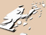
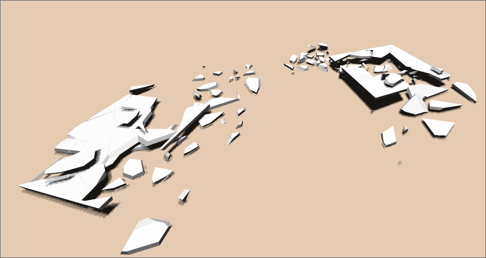
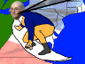
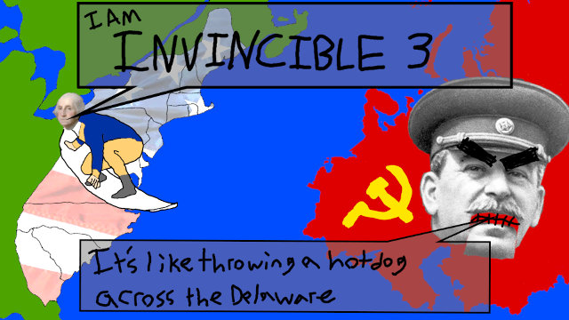
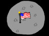
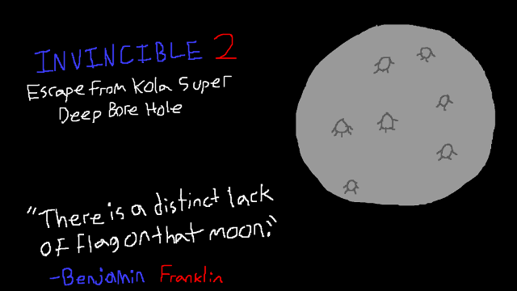

Kai Ninomiya
«software engineer, webgl –
Google Chrome»
«alum, computer & information science –
Penn»
«corresponding sysadmin –
STWing residential program»
& formerly...
«teaching assistant – CIS 565: GPU Programming»
«3d graphics engine developer – Cesium.js»
«teaching assistant – CIS 277: Interactive Computer Graphics»
«teaching assistant – CIS 460: Computer Graphics»
«co-instructor – CIS 191: Linux/Unix Skills»
«RCTA research intern – Center for Human Modeling & Simulation»
résumé (pdf)
bitbucket · github
about me
I work full-time on (implementing) WebGL in Google Chrome. My work is open source and easily found online.
I'm super-interested in computer science and physics, especially computer graphics, physical approaches to graphics, computational approaches to physics, and teaching what I know about these things to others.
I also think Rust is hecka cool! I co-taught a course in it once.
In my limited free time, I like to do things I think are great ('stonishing, I know), such as:
- teaching other people how to do things they think are great,
- building cool software (see below),
- building cool physical things,
- and, occasionally, making things pretty.
publications
Taylor, C.J., Cowley, A., Kettler, R., Ninomiya, K., Gupta, M., and Niu, B.. “Mapping with Depth Panoramas.” IEEE/RSJ International Conference on Intelligent Robots and Systems, Hamburg (Germany), 2015.
[preprint, 4.0 MB]
Ninomiya, K., Kapadia, M., Shoulson, A., Garcia, F., and Badler, N. “Planning Approaches to Constraint-Aware Navigation in Dynamic Environments.” Computer Animation and Virtual Worlds, 26: 119–139, 2015.
[preprint, 7.1 MB] [doi: 10.1002/cav.1622]
Kapadia, M., Ninomiya, K., Shoulson, A., Garcia, F., and Badler, N.I. “Constraint-Aware Navigation in Dynamic Environments.” ACM SIGGRAPH Conference on Motion in Games, Dublin (Ireland), 2013.
projects
all of this was done in or before college – most recent first, roughly
coursework + other
-
 [WebGL] Deferred shading rendererDeferred shading renderer (Oct. 2015, created from scratch, to prepare base code as an assignment for CIS 565 students)
[WebGL] Deferred shading rendererDeferred shading renderer (Oct. 2015, created from scratch, to prepare base code as an assignment for CIS 565 students)
-
 [Rust] A raytracer with primitive photon mappingRusttrace (mostly Summer 2014, pair)
[Rust] A raytracer with primitive photon mappingRusttrace (mostly Summer 2014, pair)
-
 [Rust] A very small, basic path tracer a la smallptrspt (Fall 2015, solo)
[Rust] A very small, basic path tracer a la smallptrspt (Fall 2015, solo)
-

[WebCL] GPU Dynamic Fracture in the BrowserGPU Dynamic Fracture in the Browser (Dec. 2014, coursework, pair)
-
 [CUDA] A GPU-accelerated path tracerGPU Path Tracer (Oct. 2014, coursework, solo)
[CUDA] A GPU-accelerated path tracerGPU Path Tracer (Oct. 2014, coursework, solo)
-
 A smoke simulator/rendererCIS 563 Smoke Simulation (Mar. 2014, expanded coursework)
A smoke simulator/rendererCIS 563 Smoke Simulation (Mar. 2014, expanded coursework)
[videos: initial temperature source (13 MB), initial velocity source (14 MB)]
-
 A modular volumetric rendererCIS 560 Volumetric Renderer (Oct. 2013, expanded coursework)
A modular volumetric rendererCIS 560 Volumetric Renderer (Oct. 2013, expanded coursework)
games
-

Invincible 3 – use time-bending powers to fight time-traveling invadersInvincible 3 (Mar. 2016, Penn Play Game Jam “Time”, team of 3)
Play now! Using Unity WebGL (Google Chrome recommended). -

Invincible 2 – help the Capitalosaur escape Kola Superdeep BoreholeInvincible 2 (Mar. 2015, Penn Play Game Jam “Space”, team of 3)
Play now! Using Unity WebGL (Google Chrome recommended). -
 Invincible 1 – explore a puzzling cave by taking advantage of disposable laborInvincible (Mar. 2014, Penn Play Game Jam “Exploration”, team of 2)
Invincible 1 – explore a puzzling cave by taking advantage of disposable laborInvincible (Mar. 2014, Penn Play Game Jam “Exploration”, team of 2)
Play now! Using Unity WebGL (Google Chrome recommended).
-
 Chickens, a networked platformerChickens + the EGGS GL GUI System (Jan. 2011–Jan. 2014, group)
Chickens, a networked platformerChickens + the EGGS GL GUI System (Jan. 2011–Jan. 2014, group)
-
 Witfell, a 4D board gameWitfell (May 2010–Jul. 2012, group)
Witfell, a 4D board gameWitfell (May 2010–Jul. 2012, group)
(updated December 2016)